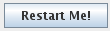

The Local and Remote ADDE Data Managers are available through the Tools->Manage
ADDE Datasets menu. Select the Local Data tab to
manage access to image data on your workstation, or the Remote Data tab
to manage access to data on other workstations. Continue below for
more information about the Local ADDE Data Manager, or go to the Remote
ADDE Data Manager page for more information.
Viewing the Existing Local Datasets
 Image 1: Local ADDE Data Manager
Image 1: Local ADDE Data Manager The Local ADDE Data Manager lets
you add, delete or edit access to local image datasets that are available through
the Satellite Imagery chooser when
you select <LOCAL-DATA> in the Server field. Other
types of data (e.g., grib or point) in local files can be accessed directly
through other choosers (e.g., the General
Files chooser).
The columns in the table are defined below.
- Dataset - Enter a dataset name
for the local server entry. The dataset name is limited to eight characters
or less and cannot be entirely numeric.
- Image Type - Enter an image type
name for the new local server entry. This will appear under the Image
Type pull down menu in the Satellite Imagery chooser. The image
type name is limited to twelve characters or less.
- Format - Select the format of
the image files. The following formats are supported in McIDAS-V:
- AMSR-E Level 1b
- AMSR-E Rain Product
- GINI
- LRIT
- McIDAS AREA
- Meteosat OpenMTP
- Metop AVHRR Level 1b
- MODIS L1b MOD02 (MODIS Level 1b)
- MODIS L2 MOD04 (MODIS Level 2 Aerosol)
- MODIS L2 MOD06 (MODIS Level 2 Cloud Top Properties)
- MODIS L2 MOD07 (MODIS Level 2 Atmospheric Profile)
- MODIS L2 MOD28 (MODIS Level 2 Sea Surface Temperature; note: when
loading this data, you must use line/element for the Location, and
use the raw size of the image, or a magnification with the lock icon
unlocked)
- MODIS L2 MOD35 (MODIS Level 2 Cloud Mask)
- MODIS L3 MODR (MODIS Level 2 Corrected Reflectance)
- MSG HRIT
- MTSAT HRIT
- NOAA AVHRR Level 1b
- SSMI (TeraScan netCDF)
- TRMM (TeraScan netCDF)
- Directory -
Select the location of the local files using the pop up navigation box. At
this time, only a directory can be selected. An option to add files by file
mask will be added in the future.
 The
status line in the lower left corner gives information about the operating
status of the local image server. If the server has stopped or is not running
as expected, the status line will say "Local
server is not running".
In this case, click the Restart Me! button
to restart the server.
Adding a New Local Dataset
To add a new local dataset entry, select File->New Local Dataset from
the ADDE Data Manager menu.
 Image 2: Add Local Dataset window
Image 2: Add Local Dataset window The Add Local Dataset window lets you add access to local
image datasets so they are available through the Satellite
Imagery chooser. The fields and buttons are defined below.
- Dataset - Enter a dataset name
for the local server entry. The dataset name is limited to eight characters
or less and cannot be entirely numeric.
- Image Type - Enter an image type
name for the new local server entry. This will appear under the Image
Type pull down menu in the Satellite Imagery chooser. The image
type name is limited to twelve characters or less.
- Format - Select the format of
the image files. See the above list for data formats
that are supported as local datasets in McIDAS-V.
 - Adds a new entry to the Local ADDE Data Manager
containing the information specified in this window.
- Adds a new entry to the Local ADDE Data Manager
containing the information specified in this window. - Closes the window and discards any information that was entered.
- Closes the window and discards any information that was entered.
Editing an Existing Local Dataset
To edit an existing entry, click on the entry to highlight it and
select Edit->Edit
Entry... in the menu or double click on the entry to bring up
the Edit
Local Dataset window. Make the needed changes and click Save
Changes
(or click Cancel to discard any changes and close
the window). To delete an entry, click on the entry to highlight it and
select Edit->Remove
Selection from
the menu.